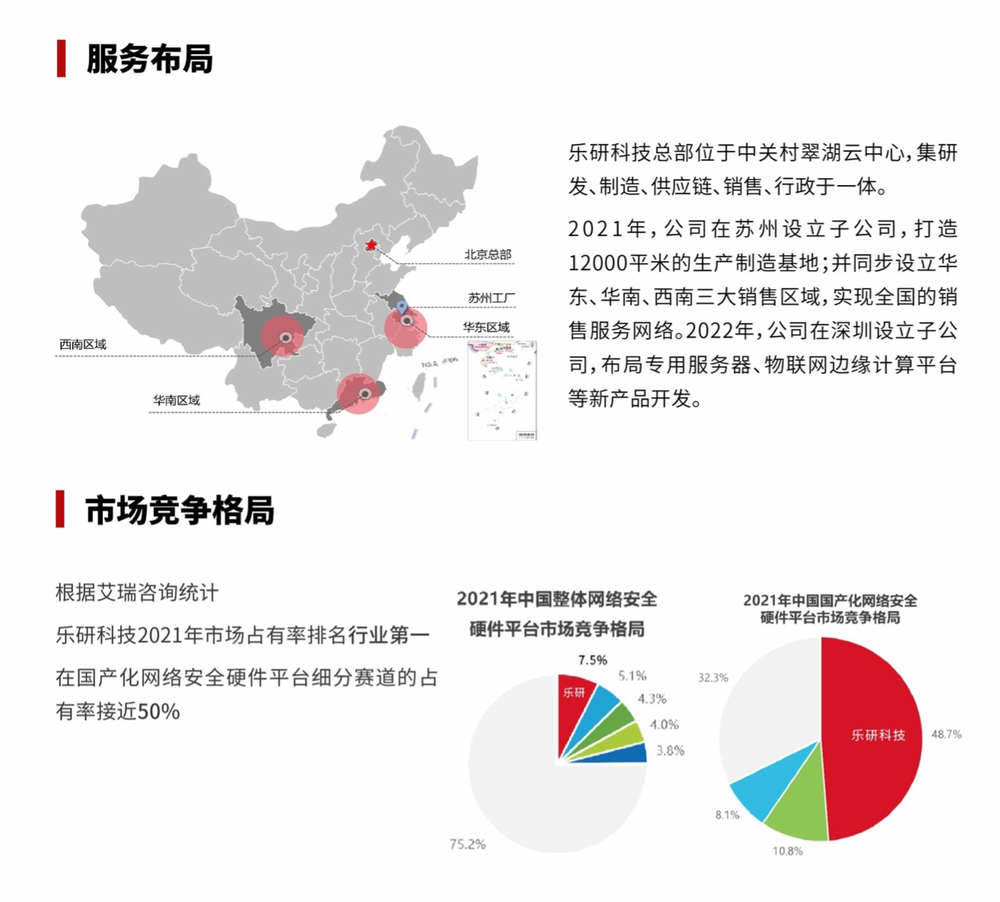

乐研科技
北京乐研科技股份有限公司（简称“乐研科技”）创立于2006年3月，总部位于北京市高科技产业园“中关村翠湖云中心”内，拥有精干且富有效率的信息安全硬件研发、生产的专业科技队伍，是北京市专精特新“小巨人”企业。
公司专注于网络安全硬件平台的研发、生产、销售及服务，目前已经打造出传统网络安全、国产化网络安全、工业网络安全、配件等丰富的产品系列。公司产品具有高可靠性、高稳定性、高吞吐量等特点，可广泛应用于防火墙、统一威胁管理、IDS/IPS、上网行为管理等诸多场景。
根据艾瑞咨询统计，乐研科技2021年市场占有率排名行业第一，在国产化网络安全硬件平台细分赛道的占有率接近50%。
